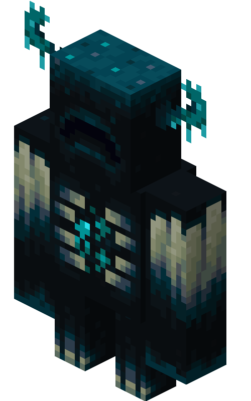

| Type | Warden |
|---|---|
| HP | Very High |
| Attack | Very High |
| Defense | 3 |
| Speed | 3 |
| Range | 2 (Sonic Boom) |
| Size | 2×2 |
| Dimension | Overworld |
The Warden
Special boss of The Deep Dark — the most dangerous encounter in the Overworld.
The Warden is the apex predator of the Deep Dark, encountered after surviving all 8 Overworld biomes. With the highest HP and attack of any Overworld encounter, it serves as the gatekeeping boss for the Nether. Its Sonic Boom renders conventional defense builds ineffective, demanding a different approach from every prior encounter.
Abilities
- Sonic Boom: A ranged attack that completely ignores defense. Hits from up to 2 tiles.
- Darkness Aura: Reduces player visibility, limiting sight range for the duration of combat.
- Slam: A devastating melee strike targeting the center tile and all adjacent tiles.
- Locate: If the Warden loses line-of-sight, it sniffs the player’s tile and moves directly toward them, ignoring obstacles.
Strategy
Defense is meaningless against Sonic Boom — only raw HP matters. Kite the Warden with high-burst ranged attacks and avoid the slam pattern. The Darkness Aura limits how far ahead you can plan tile movements, so track the Warden’s position carefully. Attempting to hide or break line-of-sight will trigger Locate, which negates the benefit entirely. Defeating the Warden unlocks access to the Nether.